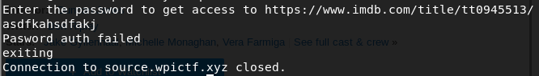
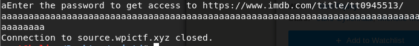
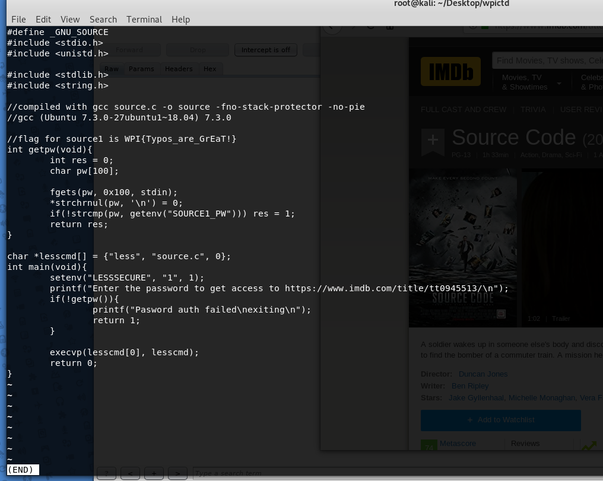

When we ssh in, it requests a password. After trying to put a random password in, it rejects the password and closes the ssh connection.
Seeing as we don't really know what's going on in the back-end, my first thought is to see if we can overflow the password buffer. I entered a whole lot of "a"s to see what would happen.
Cool! Seems like we can manage to overflow the buffer and skip some of the operations.
From here, the next thing I did was still to enter a large number of characters, but slightly less than last time.
I entered around 110 "a"s, and suddenly it pops up with the program's source code. and we get the flag. WPI{Typos_are_GrEaT!} Honestly I have no idea how this works, so this is something I definitely need to figure out.
hope you enjoyed.